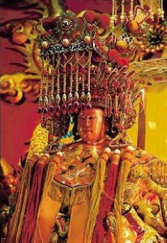
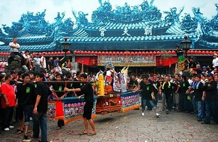
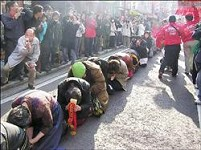
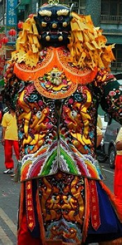

妈祖是茹素的
冯冯
妈祖信仰，遍及于中国沿海与港澳台湾，乃至南洋各地，到处都有妈祖庙或天后宫。
我曾在一些外国货船上发现供奉天后圣像，举例，希腊货船上，供有天后神像，问希腊水手，回说是“海上女神”，专佑航海人平安。供奉已久，莫知由来。也不明白为何天后是华人面貌，头戴旒冕的天后娘娘，可能是多年前由中国船员引进的，由于天后灵异无比，慈悲救助海难，乃被外国船员奉为海上女神，神龛前供奉水果鲜花，也上一枝香，他们也鞠躬合掌礼拜！
港澳的天后宫信徒很多，香火很盛，天津、福州等各地的天后宫也很旺。台湾的天后宫就更兴旺，台湾的船员，水手，都膜拜天后宫，凡是出海，无不祈求天后保佑。在台湾中南部的香火尤为旺盛，可说是超过任何宗教。
 每逢天后诞辰，全台湾的信徒蜂涌朝拜天后宫，人数以数百万计算。大小车辆，以数十万辆计，信徒人潮，徒步合掌，络绎不绝，开道的土西乐队，锣鼓喧天，旌旗蔽日，花车无数，车上供着古装童男童女，八音笙笛......浩浩荡荡，鱼贯前进。还有一车又一车的三牲，屠宰了的猪牛羊鸡鸭，染红的面包“红黾”，各式供品果子菜肴，场面盛大无比，可能不是他处所可见到。
大队多批来到天后庙，信徒纷纷下跪叩拜，供奉三牲与供品。恭请妈祖天后出巡，于是身穿清朝兵勇制服的男众，扛抬神轿，上坐天后圣像，前面由高大十尺的巨大神像作为开路前驱。神像是一个黑脸，一个白脸，各穿盔甲，这是“千里眼”与“顺风耳”两位神将，又称为“谢将军”与“白将军”；相貌是相当凶猛恐怖的，大袍以内，有人抬扛着，随着大铜锣开道，大摇大摆步行前进，妈祖出巡，路旁信徒纷纷跪下叩拜。 然后信徒拥簇天后行列到海边登船，船队数百艘，插满天后旌旗，浩浩荡荡，驶向外海，直赶福建湄洲岛，与当地的信徒汇合一同膜拜。
电视新闻所见，数百大小船舶，插满旌旗，船队行列，无比壮观，锣鼓喧天，爆竹不断，渡海前往妈祖出生地点湄洲岛，前后的场面，非常壮观，信徒的虔敬，令人感动无已！
可惜美中不足的是，信徒们忘记了，妈祖天后娘娘是吃素的修行圣神，不是吃荤的！不应如此用三牲荤肉去供奉祂！
妈祖圣女，是宋朝时代的人，出生于福建湄洲岛，姓林，因出生就不哭不言，被名为默娘，她自小是胎里素，笃信佛教，茹素修行，终身不婚，她修成神通，又降伏了千里眼与顺风耳两位神将，作为祂的侍卫护法，祂经常在海边救助航海船舶，祂常在风涛之夜，举起火炬，照明方向，以利航海人安全返家，因此被视为海神，祂又时常医治病患，因此被认为是观音菩萨化身，又被尊为圣女。
圣女白日飞升，信徒感念，为之立庙，称之为“妈祖”，即是“妈妈”。宋神宗封祂为天妃，后来明朝皇帝进封为“天后”。
信徒说，荤肉是供奉神将吃的，不是供妈祖的，可是，我想，既跟随了茹素的天后，那一个神将敢吃荤呢？慈悲的妈祖怎会接受荤供？我奉劝信徒们还是别杀生用荤肉供奉妈祖罢！
网注：美国妈祖庙
http://www.matsu-usa.org/history1992-94.htm
1992年10月4日，美国妈祖庙聘请冯冯居士为顾问。
1994年3月1日，美国妈祖庙董事长高可达，秘书长王伯松，陪同北港朝天宫董监事(蔡炎山，蔡神助，王天财，吴建兴，蔡棋和。)前往加拿大温哥华，拜访冯冯居士。
图片出处
http://forestlife.info/Onair/262.htm
原载《佛网》网站
2000 年 ── 2002 年